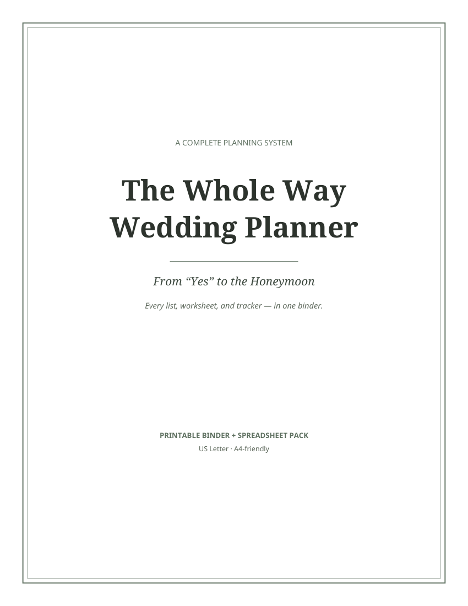
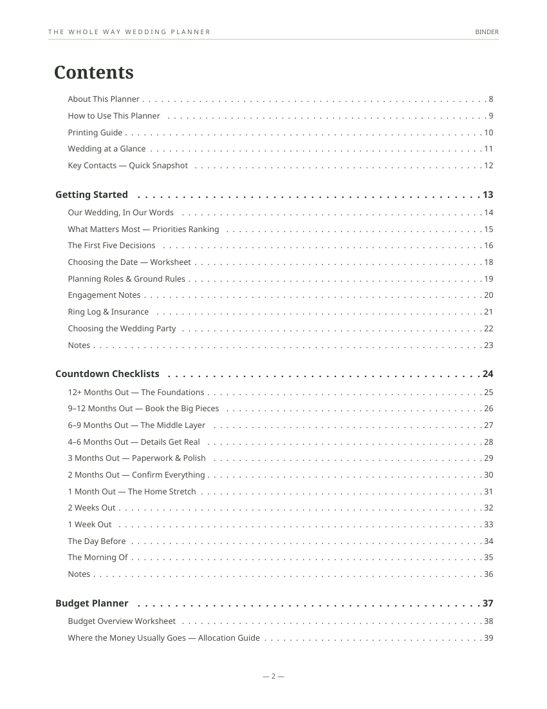
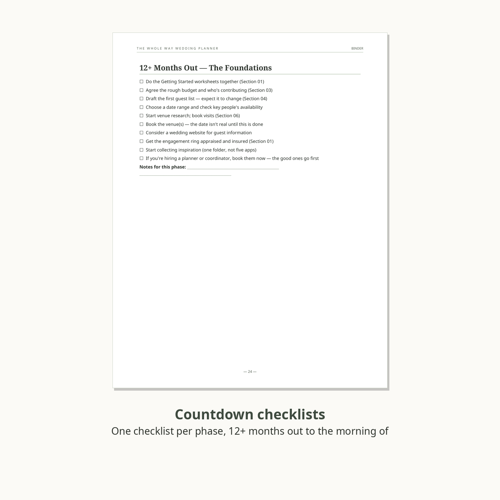
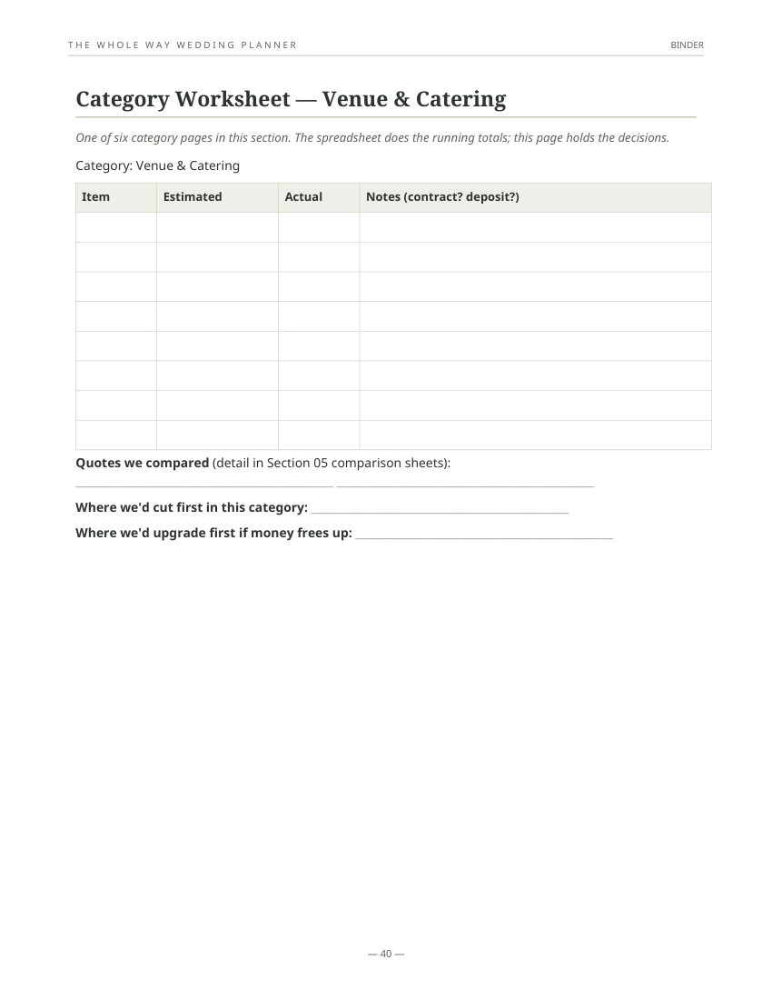
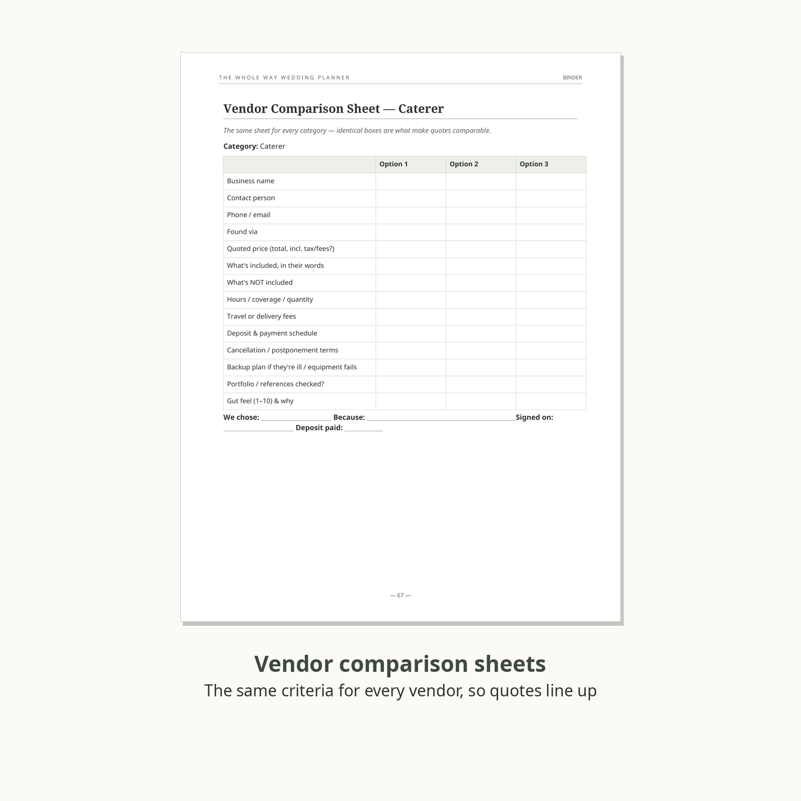
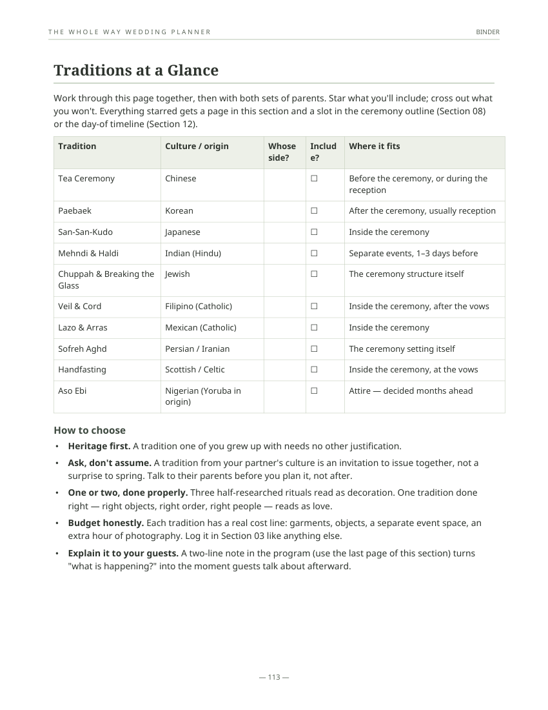
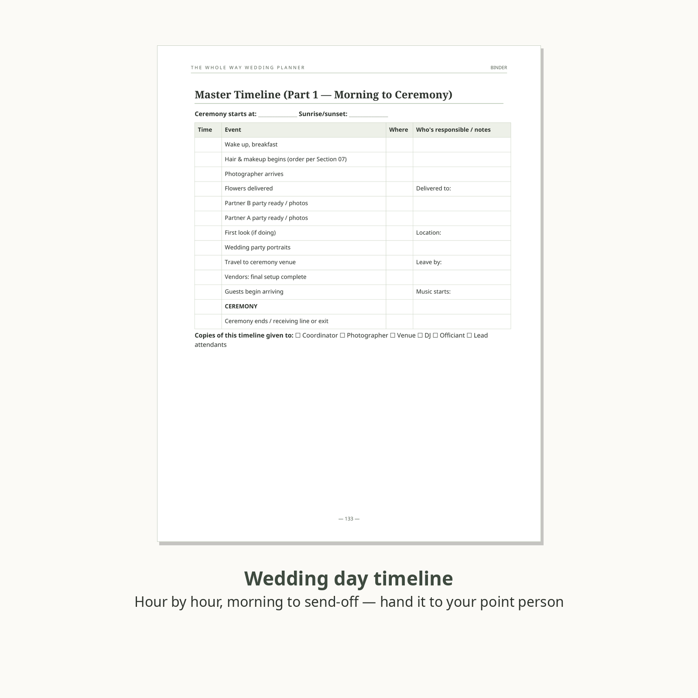
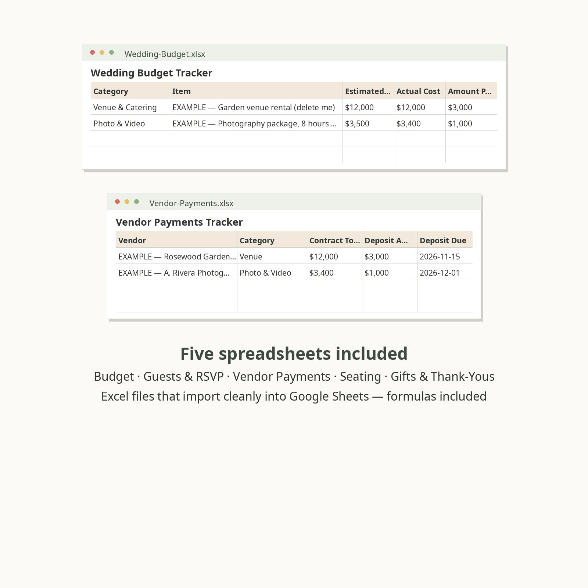
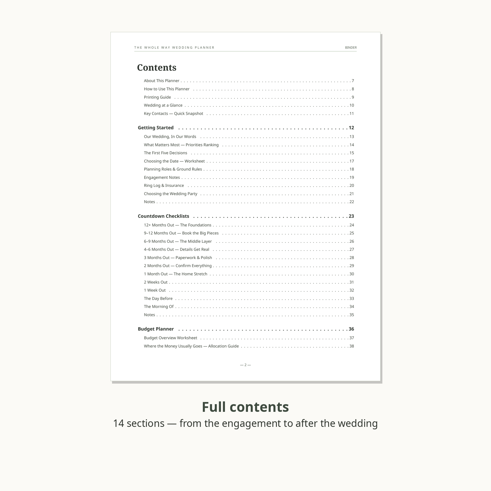
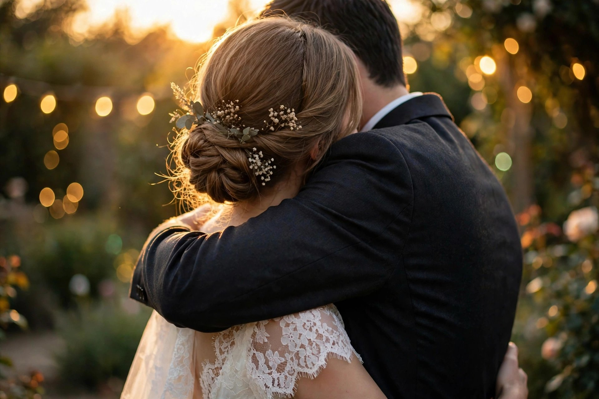

The Whole Way Wedding Planner
From "Yes" to the honeymoon. Most wedding planners stop at the wedding day — this one starts at the engagement and doesn't stop until the thank-you cards are sent: every list, worksheet, and tracker in one binder, plus the spreadsheets for the numbers.
$9 one-time payment
Buy the Wedding PlannerSecure checkout by Creem — taxes are handled by Creem at checkout. Instant download after purchase. Prefer the full store listing? View this product on Creem.

Sound familiar?
- Every free printable you find covers one piece — a budget page here, a checklist there — and leaves you to invent the system that holds them together.
- The beautiful binders are half inspiration pages. You needed pages you can write on.
- Your budget lives in a spreadsheet, your guest list in a text thread, your vendor quotes in four different notebooks. Nothing matches anything.
- Every guide ends at "you're married!" — and says nothing about the honeymoon booking you forgot, the photographer who hasn't delivered, or the name-change paperwork.
- Vendor quotes can't be compared because every vendor was asked different questions and wrote the answers in a different shape.
What you get
- The Binder (PDF, US Letter, A4-friendly) — 186 pages of worksheets across 15 sections, in the order you'll actually work: getting started & priorities, a phase-by-phase countdown from 12+ months to the morning of, budget worksheets, guest list & RSVP pages, vendor comparison sheets, venue scouting, attire & beauty logs, the ceremony builder, a full wedding-traditions chapter from around the world, menu & cake tasting records, shot lists and music lists, the hour-by-hour wedding-day timeline, the emergency kit, a full honeymoon planner, and an after-the-wedding section (thank-you tracker, name-change checklist, photo-delivery tracker, keepsake log).
- Wedding Traditions Around the World — a full chapter on ten celebrations, each written as a planning tool, not an encyclopedia entry: the Chinese tea ceremony, Korean paebaek, Japanese san-san-kudo, Indian mehndi & haldi, the Jewish chuppah and breaking the glass, Filipino veil & cord, Mexican lazo & arras, the Persian sofreh aghd, Scottish handfasting, and Nigerian aso ebi — what each one means, how it runs, a preparation checklist, and where it fits in your day. Plus a closing guide to blending two families' traditions into one wedding without doubling the ceremony.
- Budget Tracker (xlsx + Google Sheets-ready) — estimates vs. actuals, balance-due formulas, and a payments log for deposits and deadlines.
- Guest List & RSVP Tracker (xlsx + Google Sheets-ready) — every guest, household, RSVP status, meal choice, plus-one, and table, with a counts tab that totals acceptances and meals automatically.
- More trackers in the same system — vendor payments, seating planner, and gift & thank-you trackers, designed to match the binder section by section.
- Free updates for this edition — if we revise worksheets or add pages to this planner, buyers get the new files.









All 15 sections, in the order you'll work through them

Who this is for
- You're engaged and planning the wedding yourselves — no full-service planner.
- You like a checklist, and you like it complete.
- You're tired of stitching together free printables that don't match.
Who this is not for
- Couples with a full-service planner running logistics — they'll have their own system, and so should you (theirs).
- Anyone shopping for décor inspiration or a design template pack — this is worksheets and trackers, not a mood board. It's deliberately plain enough to print at home in black and white.
- Anyone who wants the planning done for them. This is a system for doing it yourselves, in order, without dropping pieces.
FAQ
How is it delivered?
Instant download after purchase: one zip with the binder PDF and the spreadsheet files. Print the whole binder or print sections as you reach them; the binder is US Letter and prints cleanly on A4 too.
How do the spreadsheets work with Google Sheets?
They're standard .xlsx files. Upload to Google Drive and open with Sheets — formulas included — or use them in Excel. CSV copies are included as well.
Is this just the free checklists from wedding blogs, bundled?
No. Every worksheet, checklist, and table in this pack was written for this product as one system: the countdown tells you which section to open, the comparison sheets use the same criteria for every vendor, and the binder and spreadsheets cross-reference each other. The structure covers the full journey — including the honeymoon and the after-wedding admin that free printables leave out entirely.
We're blending two cultures or faiths. Does it cover that?
Yes — that's what the Wedding Traditions Around the World chapter is for. Ten traditions get a full planning page each (meaning, running order, prep checklist, timing and budget notes), and the closing page walks you through combining two families' traditions into one ceremony: which shape to choose, how to keep the running time sane, and the exact conversations to have with parents, officiants, and your photographer. The pages are planning scaffolds, written respectfully — your family's own version always outranks anything in print, and the chapter says so.
We're having a small / non-traditional / courthouse wedding. Will half of it be useless?
Some pages won't apply — that's normal for any complete system, and the countdown checklists are written to be crossed off, not obeyed. The core (budget, guests, vendors, day-of timeline) scales from 20 guests to 300.
What exactly is in the zip?
The 186-page binder PDF, all five spreadsheets in both .xlsx and .csv (budget, guest list & RSVP, vendor payments, seating planner, gift & thank-you tracker), and a short read-me that explains the order to use everything in.
Can I buy just the spreadsheets, or just the binder?
No — they're one kit, designed to cross-reference each other, and the $9 price already covers both. You're not paying twice for the halves.
We're marrying outside the US. Is it still useful?
Most of the system is location-neutral — budget, guests, vendors, timelines, the traditions chapter. A few admin pages (like the name-change checklist) describe common US paperwork; treat those as a prompt list and confirm the specifics with your local authorities.
What's your refund policy?
This is a digital product delivered in full at purchase. Refunds follow the selling platform's policy for delivered digital goods; we don't promise unconditional refunds. That said, if the files arrive broken or incomplete, contact us and we will fix the delivery or refund you — a defective download is on us, always.
Was AI used to make this?
Yes. This product was produced with AI assistance and human editorial review, and it's disclosed here and in the binder rather than hidden.
Will this guarantee our wedding goes smoothly?
No — and be suspicious of any planner that promises that. This is an organising system: it makes sure nothing depends on memory. Vendors, weather, and families remain gloriously unplannable.